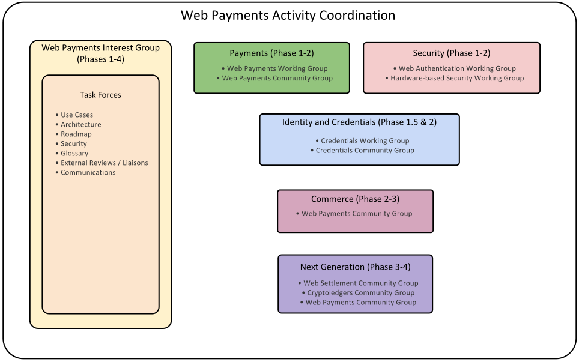
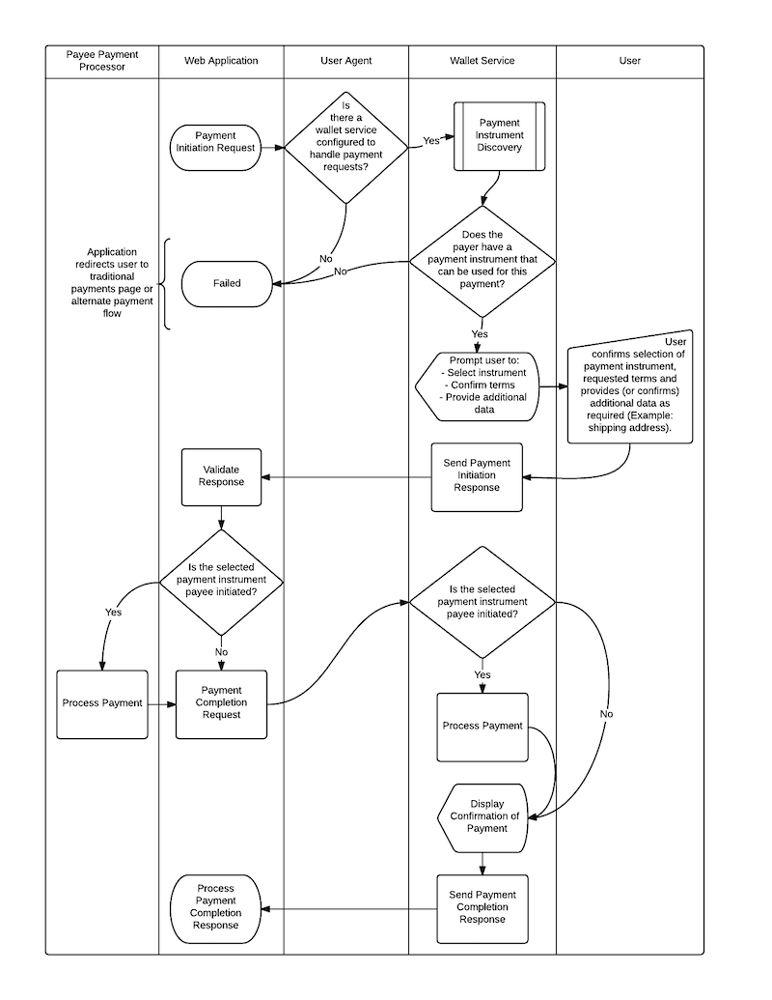

The purpose of this document is to outline a coherent implementation and deployment strategy for the Web Payments standardization work at W3C.
This document is a work in progress and is being released early and often using an agile process; it is incomplete.
The purpose of this document is to outline a coherent implementation and deployment strategy for the Web Payments standardization work at W3C. It consists of the following major sections:
This document is one part of a greater body of work around Web Payments that the Web Payments Interest Group at W3C is producing. These other documents include:
In order for the Web Payments Activity to succeed, multiple groups will need to coordinate work in key areas related to payments, commerce, identity/credentials, and security. The diagram below outlines the categories that each group will participate in as well as the phases the groups will be active in:
The initial implementation of the Web Payments work will start in October 2015 and will focus on delivering standards for a Minimum Viable Platform (MVP) by December 2017.
The scope of work supports the following elements of a basic purchase triggered by user interaction with a Web application initiating a new payment. These standards define a high-level message flow for a payment from payer to payee either in the form of a credit push (payer initiated) or a debit pull (payee initiated) payment, and can be used to facilitate a payment from any payment scheme.
The group will also address exceptions that may occur during these steps, including payment authorization failure.
The following use cases are in scope for phase 1 with specific limitations expressed beside each use case:
| Use Case | Notes |
|---|---|
| Website | |
| Registration-less | |
| One Time Payment | |
| Ubiquitous Schemes | |
| Discovery | Unclear about how much wallet/payment instrument discovery flexibility should be in phase 1. |
| Payer Privacy | The use case where the payer shares a subset of their payment instruments with the payee before the purchase is not in scope for this phase. |
| Manual Selection | |
| Password Authentication | |
| Multifactor Authentication | Stretch goal for phase 1 with a focus on FIDO-based authentication and mobile phone-based fingerprint authentication. |
| Payee-initiated | |
| Payer-initiated | |
| Proofs | Very basic proof of initiation of funds transfer for phase 1. |
| Virtual Goods | |
| Physical Goods | |
| Electronic Receipts | Very basic receipt container and delivery protocol for phase 1. |
| Subscription | Stretch goal for phase 1. |
| Basic Refund | Stretch goal for phase 1. |
The capabilities associated with each use case listed above can be found in the Web Payments Capabilities 1.0 document.
A list of relevant groups that will participate in the first iteration of specification creation.
| Group | Scope | Charter |
|---|---|---|
| Web Payments Interest Group | Continued development of use cases and requirements for phase 2. Liason between larger W3C community and other relevant standards bodies. | October 2014 - December 2017 |
| Web Payments Working Group | Invoking a payment request, selecting a payment instrument, initiating funds transfer, delivering a proof of payment. | Draft Charter |
| Web Authentication Working Group | Secure authentication of entities (users, systems and devices) to enable high-security Web applications. Based on FIDO Alliance work. | No charter yet |
| Hardware-based Security Working Group | A set of Hardware-Based Web Security standard services providing Web Applications usage of secure services enabled by hardware modules (Trusted Execution Environments, Secure Elements, and other secure enablers). | No charter yet. |
It is currently unknown whether or not a Credentials WG or Linked Data Security WG will be created.
Deployment in phase 1 will focus on enabling a few major online retailers to run Web Payment agents to issue Web Payment invoices for processing at 1-2 major online Payment Service Providers (or banks). The payment institutions would then initiate the payment and send a proof of payment back to the retailer.
Where we need an extensible message format, we will want to specify at least a data model. The hard question will be whether we can achieve a single serialization (e.g., JSON or JSON-LD or XML) or whether we need multiple.
What canonicalization (if any) is needed in our messages for the purpose of digital signatures.
The editors wish to thank the participants of the Web Payments Interest Group for discussions about and contributions to this document, as well as the Web Payments Community Group for earlier work that informed this document.